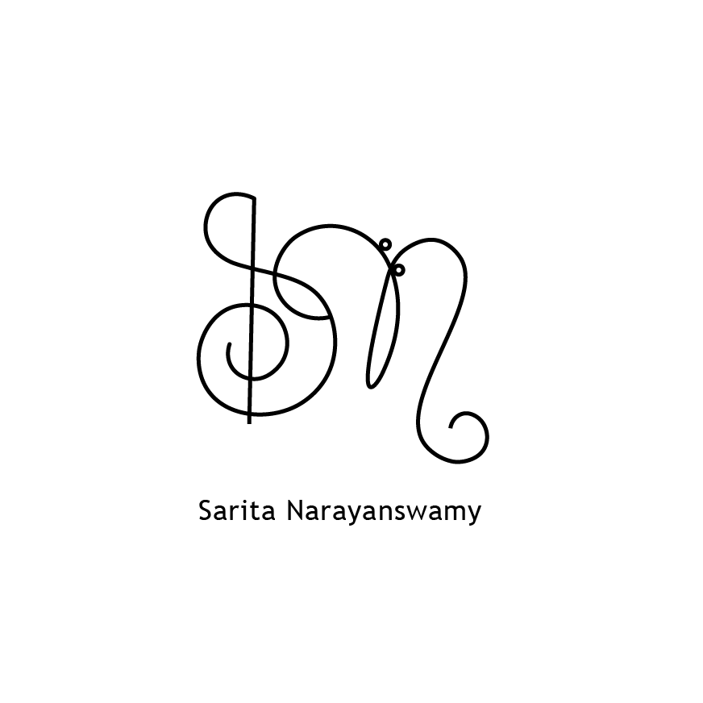
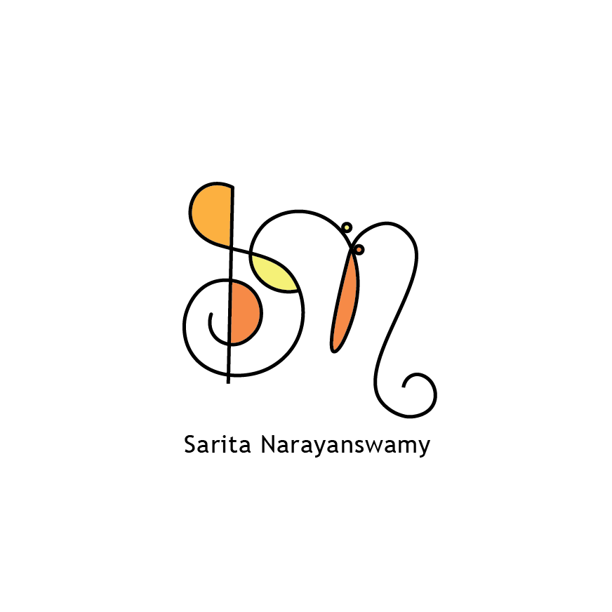

Logo Design
Tammy's Soul Garden: Company Logo
Description:
This logo was made in Adobe Illustrator for Tammy's Soul Garden. This is a small business which hosts parties, art sessions, and overall works to provide artistic outlets for those interested. Making the logo involved lots of prototyping and communication with the client. Consultations included conversations focused on color scheme, specifications, and changes to be made on different versions of the logo to achieve the final product.
Indiana Univeristy: Theatrical Arts Development Association Club Logo
Description:
This logo was made in Adobe Illustrator for Indiana University's Theatrical Arts Development Association Club. The club president provided guidelines as to what they wanted in the logo as well as a specific color palette and its overall theme.
Personal Logo
 Description:
This logo was made for my own personal use, and works to represent a visual that encompasses the personal brand I would like to present.